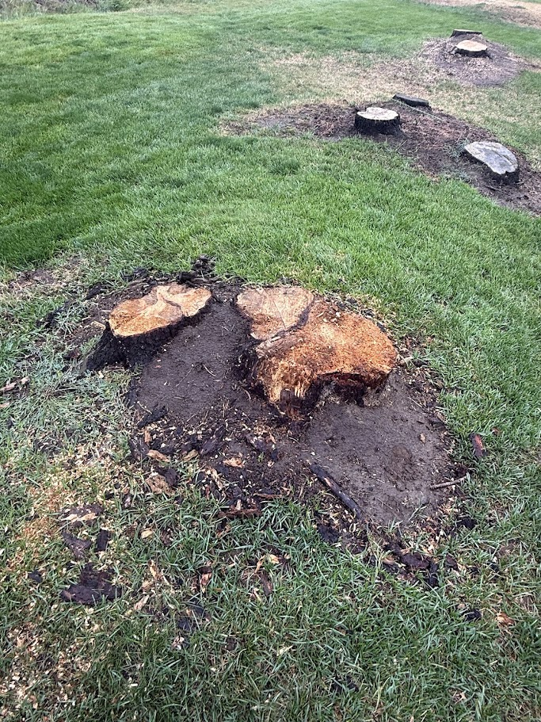
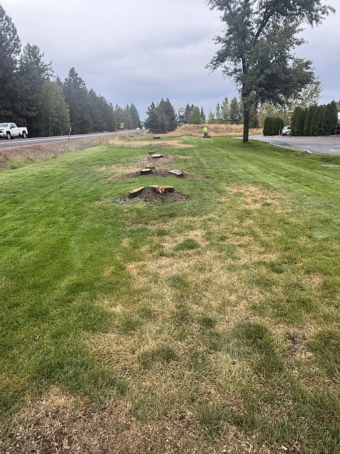
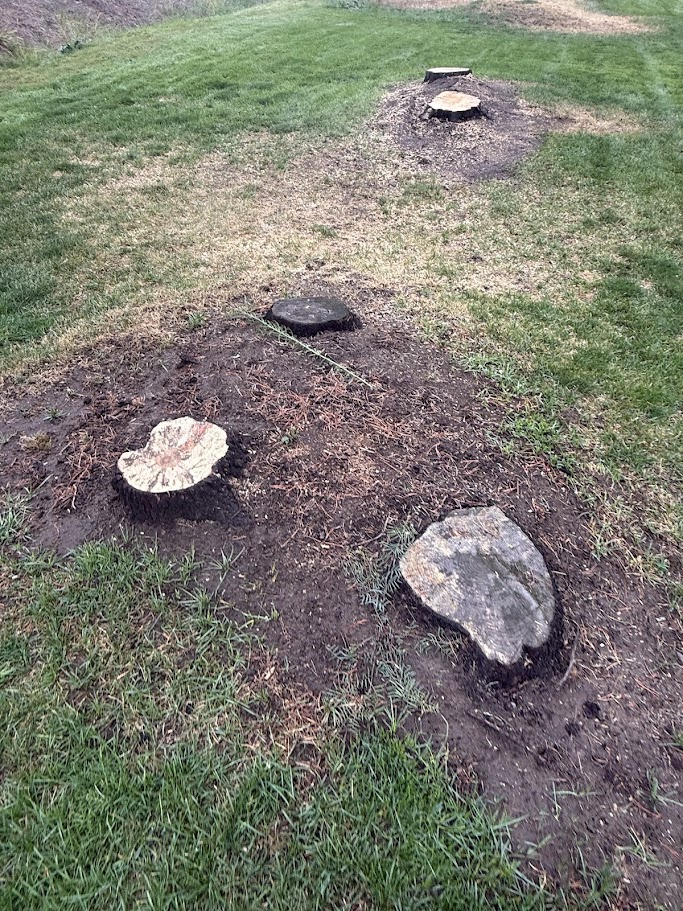
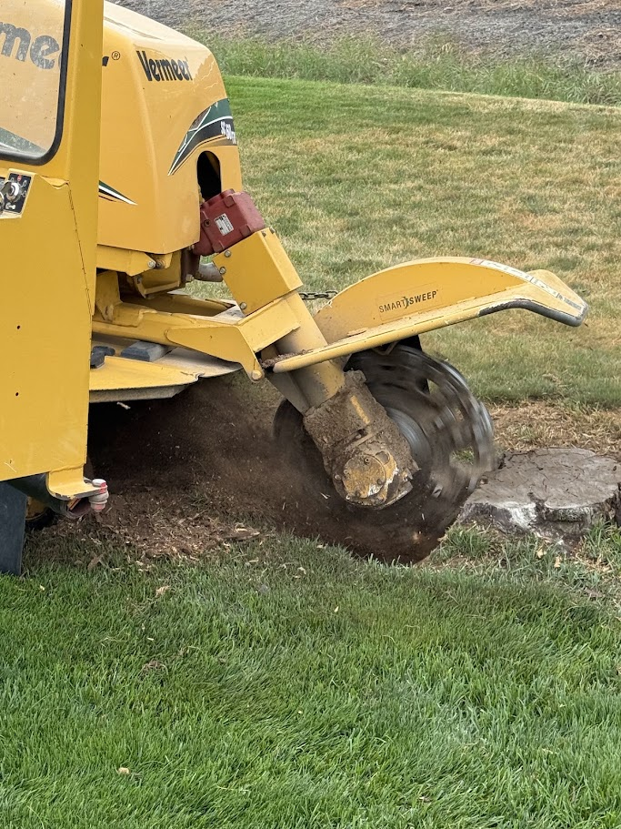

The job: a stump count we didn't check
This one was in Deer Park, north of Spokane. A tree crew had already taken the trees down along a strip of lawn, and the stumps were left for us to grind. The stump count came from the tree crew, and we built our quote around that number instead of walking the site and counting every stump ourselves.
When we showed up, the count didn't match. We'd quoted 11 stumps. On the ground we found 18, including multi-trunk stumps like the one above, where a single tree had been cut as separate stems.
That's not a knock on the tree crew. A tree crew counts trees. A stump grinder has to count — and measure — what's actually left in the ground, and those aren't always the same number.


We honored our quote. The mistake was trusting a count we didn't verify, and that's on us — not the customer. One of the things we hold ourselves to is “do what you say you'll do,” and a written estimate is exactly that.
Why stump counts go wrong
“How many stumps?” sounds like the easiest question in the job. It's usually the one that's off. A few common reasons:
- Multi-trunk trees. Plenty of trees grow as clumps, or with two or more co-dominant stems rising from one base. A tree service sees one tree. After the cut, you're looking at two or three cut faces.
- Trees planted close together. Two trees a foot or two apart can grow into one tangled root mass. Whether that's one stump or two depends on who's counting.
- Suckers and regrowth. Some trees send up new shoots from the roots after they're cut, and an old stump can end up ringed by a cluster of new stems.
- Old stumps hiding in the grass. A row of fresh cuts is easy to count. A stump from a tree removed years ago, cut low and grown over, is easy to miss until a mower — or a grinder — finds it.
- Big surface roots. A thick root humping up out of the lawn a few feet from the stump can look like its own stump in a photo.
So, is it one stump or three?
The honest answer: it depends on what's under the ground — and for pricing, the count matters less than most people think.
Grinding work isn't really driven by “a stump.” It's driven by how much wood has to come out, which comes down to how wide the stump is at ground level and how deep it needs to go. That's why stump grinders measure across the widest point at the base, including the root flare — where the trunk widens out into the roots — not just the flat cut on top. A stump with a modest-looking cut face can measure a lot wider at the ground.
A multi-trunk stump can be measured two ways: as one wide stump across the whole cluster, or as separate stumps, each with its own flare. Either way, the amount of wood in the ground is the same. What changes the price is when the count or the size on the quote doesn't match what's actually there.
How stump grinding is usually priced
We don't publish a price list. Every stump job gets quoted on its own, and the estimate is in writing before any work starts. Across the industry, though, you'll generally run into a few pricing models:
Every one of those models breaks the same way: when the count or the measurements on the quote don't match what's in the ground. Stump count is just the easiest number to get wrong. We walk through the eight factors that actually drive a stump quote on our services page.
Chasing roots: where a simple job gets out of hand
The stump is the part everyone sees. The roots are where a job can quietly double.
Many trees run thick surface roots out across the lawn — the ones you mow around, trip over, or watch lift a walkway. Grinding those down is called chasing roots, and it's usually a separate decision from grinding the stump itself. Most grinders treat it as extra work, because it is: every foot of root you chase means more passes with the machine.
Here's how it snowballs:
- Every root you chase widens the work area.
- A wider work area means more chips — and more cleanup or haul-off.
- Hauling those chips out leaves a bigger hole to backfill with topsoil.
- A bigger patch of bare dirt means more seed or sod to get the lawn back.
None of that is a reason not to chase roots. Sometimes it's the whole point — you want to mow flat, plant a bed, or set pavers. It's just a decision worth making up front: which roots, how far out, and how deep, written on the estimate before the grinder starts.

How to get an accurate stump grinding quote
Whoever you hire, these steps take most of the guesswork out of it:
- Count cut faces, not trees. If a tree was cut as three stems, say so.
- Measure at the ground. Measure across the widest point at the base, flare included — not the cut on top.
- Send a photo of every stump. Put a tape measure or a shoe next to it for scale, and add one wide shot of the whole area.
- Point out surface roots. Note which roots you want ground and roughly how far out they run.
- Say what's next for the spot. Lawn, garden bed, patio, or fence line — it changes how deep and how wide the grinding needs to go.
- Mention access. Gate width, slopes, fences, and tight spots between buildings all matter for getting the machine in.
- Flag anything buried. Sprinkler lines, landscape lighting, and invisible fence wire aren't covered by a utility locate. More on that in our 811 post.
You can send all of it through our service request form, or book an on-site consultation and we'll count and measure it ourselves. After Deer Park, that's the way we'd rather do it anyway.
Stump grinding in Deer Park and north Spokane County
Deer Park is part of our regular service area, along with Chattaroy, Colbert, Mead, Elk, Nine Mile Falls, and the rest of north Spokane County. We handle both stump grinding and full stump removal and cleanup — ground below grade, chips hauled, and a written estimate before we start.
Common questions
Is a multi-trunk stump priced as one stump or several?
It depends on the grinder and on the stump. Some measure the whole cluster across its widest point as one stump; others measure each trunk separately. Either way, the work is driven by how much wood is in the ground, so what matters most is that the quote reflects the stump's real size and shape. Send a photo and we'll tell you how we'd measure it.
Does stump grinding include the surface roots?
Not automatically. Grinding the stump and chasing surface roots out into the lawn are usually treated as separate pieces of work. Tell us which roots you want ground and how far out they run, and we'll put it on the written estimate before any work starts.
Why is a stump measured at the ground instead of at the cut?
Because the cut on top isn't the widest part. Trees flare out where the trunk meets the roots, so a stump is usually wider at ground level than the flat cut suggests. That root flare is wood the grinder has to take out, so it's part of the measurement.
Do you do stump grinding in Deer Park, WA?
Yes. Deer Park is part of our regular service area, along with Chattaroy, Colbert, Mead, Elk, Nine Mile Falls, and the rest of the Spokane and Coeur d'Alene region. Request service online or call 509-434-9554.